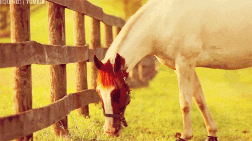

10 CUIDADOS BASICOS QUE NECESITA UN CABALLO

Los caballos requieren unos cuidados básicos que la persona o personas que vayan a tenerlos deben conocer y comprometerse a garantizar.
Desde Clínicas Veterinarias Veterpet hemos preparado un pequeño listado de los 10 cuidados esenciales que necesitan los caballos:
1*Aseo diario
Además de para cuidar su aspecto, el aseo de los caballos es fundamental para que gocen de buena salud, tanto física como mental.
Los caballos que habitan en establo necesitan una limpieza más frecuente que los ejemplares que viven en libertad. Mientras que los que viven en establo precisan de un aseo diario, los que viven en libertad se pueden lavar cada 2 o 3 días.
Para el aseo de un caballo necesitarás:
Dos esponjas y champú especial para caballos
Se debe usar una esponja para el maslo y el ano y otra para los belfos y los ollares
2*Limpieza y cuidado de los cascos
Los cascos de los caballos son los encargados de amortiguar los impactos contra el suelo y proteger la estructura interna de los pies del animal.
Si no se cuidan adecuadamente, los cascos pueden sufrir agrietamientos y otros problemas que pueden derivar en infecciones. En el caso de los equinos herrados, se recomienda recortar los cascos cada 5-6 semanas.
Elementos necesarios para la limpieza de cascos:
Es importante limpiar el casco del animal antes y después de que este haga ejercicio. Para ello recomendamos que se empleen los siguientes elementos:
Herramienta Limpia cascos
Se trata de un gancho con forma curva y punta redonda, que resulta muy útil para limpiar la suciedad acumulada en las diferentes partes del casco.
Es conveniente realizar la limpieza desde el talón hacia la lumbre y ser especialmente cuidadosos con las áreas blandas.
Grasa y brocha
Es importante engrasar el casco frecuentemente para evitar agrietamientos. Hay caballos que sufren de especial sequedad en los cascos, en los que recomendamos aplicar la grasa tras ducharlo, para aprovechar la humedad. Lo más habitual es aplicar la grasa con una brocha
3*Herraje regular
Para mantener el casco del caballo sano es fundamental realizar un herraje regular cada mes o, como máximo, cada 6 semanas. Recuerda que, si pasa mucho tiempo entre herraje y herraje, el casco habrá crecido demasiado y los surcos de la ranilla serán cada vez más profundos.
4*Alimentacion adecuada
Los caballos suelen comer dos o tres veces cada día, ingiriendo hasta 10 kg de media de alimento al día.
Es cierto que las necesidades alimenticias de un caballo pueden variar de un individuo a otro. No obstante, la dieta básica de un caballo se compone unos alimentos básicos.
Dieta básica de un caballo:
Heno (alfalfa o césped)
Grano (pienso dulce o avena)
5*Hidratación diaria
Por otro lado, los caballos necesitan ingerir grandes cantidades de agua. Cada día beben entre 25 y 55 litros. Como propietario de un caballo, debes asegurarte de que siempre tenga acceso a agua limpia y abundante.
6*Ejercicio físico regular
Es conveniente que, antes de iniciar el galope, el animal pasee durante unos minutos para habituarse a la actividad.
En cuanto al tiempo de ejercicio de un caballo, debería de ser de, como mínimo 4 horas semanales (1 hora cada día que se haga ejercicio)
7*Contar con un día de descanso
Es importante que el caballo haga ejercicio, pero también necesita descansar. Por ello, es conveniente que cuente con un día a la semana para este propósito.
8*Cepillarle el pelaje a menudo
Para que el pelaje de un caballo luzca sano es clave cepillarlo con frecuencia.
Utensilios para cuidar el pelo del caballo:
Rascadera
Cepillo de crin
9*Disponer de un establo cómodo
El establo es clave para el bienestar de un caballo, pues es el lugar donde éste se resguarda de la climatología y supone un espacio en el que pasa gran parte de su vida.
Por todo lo anterior, es vital que el establo mantenga unas condiciones adecuadas de limpieza e higiene, además de contar con un espacio vital suficiente.
Además, recuerda que el establo debe contar con camas de paja o viruta donde el caballo pueda descansar
10*Cuidados veterinarios
esde que nacen, los caballos deben pasar revisiones veterinarias periódicas para cerciorarnos de que todo está bien en su salud. Un aspecto muy importante es su salud bucodental, que ha de revisarse, al menos, una vez al año.
Además, como pasa con otros animales como perros y gatos, deben recibir los tratamientos antiparasitarios pertinentes y también sus vacunas.
Después de leer este artículo habrás comprobado que los caballos son unos animales con muchas necesidades, que necesitan gran compromiso y unos cuidados muy específicos.